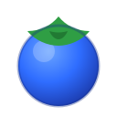
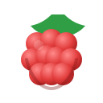

Modelling Natural Selection
Berry & Bear Simulator – based on 20 berries per season, bears prefer blueberries, 4 berries per bear (each surviving berry makes 5 for next season).
Game Setup
Total berries per season
Default: 20 (matches classroom activity)
Initial blueberries
Blueberries:
10
· Raspberries:
10
Number of bears
Each bear eats 4 berries (prefers blue). For the original lab, you can use 4 bears.
Number of seasons
You can try more than 4 seasons to see long-term trends.
Start / Reset
Run 1 Season
Run All Seasons
Population Table
Season
Total Berries
Blueberries
Raspberries
Current Season Graph

10
Blueberries

10
Raspberries
4
Bears
Blueberries: 10
Raspberries: 10
Season Trend Graph
X-axis: season. Y-axis: number of berries (blueberries vs raspberries).
What the Bears Did (Log)
Press “Start / Reset” to begin.